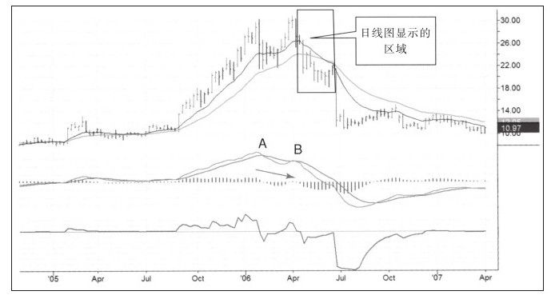
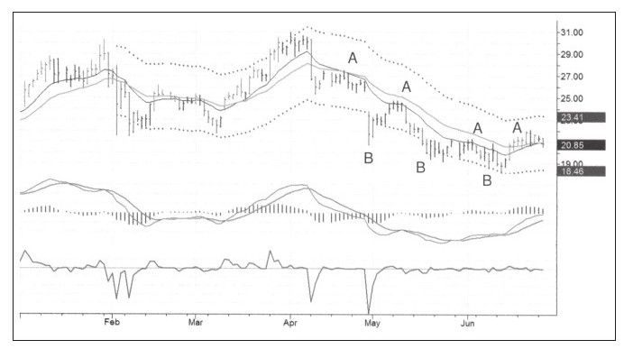

几年前，在一次由悉尼技术分析师协会举办的晚宴上，我结识了坐在我旁边的建筑师，他告诉我每年他都会飞往西班牙参加在潘普洛纳举行的奔牛节。当与牛群在古老而狭窄的街道中一同奔跑时，人们都会从金钱的欲望中释放出来。一群人冒着被牛刺伤或踩伤的风险跑在牛群前面。于是我就问他为什么每年都参加奔牛节，他说没有比致命危险更让人感觉到活着的存在了。我有时就想，在顶部做空很像在牛群之前奔跑，不仅是利润吸引着人们这样做，还有战胜挑战和比大众跑得快的满足感掺杂其中。
还有一种做空的方法，这种方法不必与牛市纠缠在一起，那就是等到牛市结束时才做空。这种做空方式的满足感可能不如顶部做空那么强烈，但成功率却大幅提升。但要记住，这种做空方式不是没有风险，我们要用最小的风险控制方式来规避这种做空方式的风险。我们一起学习在下跌趋势中做空股票的案例（见图7-14），请看图中用方框框起来的部分，并在日线图中继续研究这部分走势。

这部分下跌走势在日线图中是图7-15中画有通道的部分（见图7-15）。下跌趋势中做空的要点是当价格接近价值时做空，如图7-15中间部分所示。平仓获利了结的时间是价格跌到或跌破通道下轨，我们要在价值区做空，并在低于价值的区域平仓。

4月份早期，NWRE暴跌后，价格回拉到价值区，也就是两条移动平均线中间的区域。这次回拉给交易者做空的机会，之后价格再度下跌，并跌破通道下轨。5月份，价格又回到价值区，又给出了做空的机会；5月中旬，价格跌破通道下轨进入超卖区，预示着该平仓了。这种钟摆式的运动一直持续到图的右侧，之后又持续了一段时间。
做空时使用通道会给交易者提供一系列清晰定义的交易机会。当然，在市场中没有什么事情是完全简单的，也有一些潜在的危险。其中一条就是，无论周线图表还是月线图表，每次价格回到价值区和跌到超卖区的情形都完全不同。做空时不能太贪婪，必须在抓住“快钱”后赶紧离场。
接下来要讲的是对衡量做空质量非常有用的通道评分法。你是否记得，抓住通道宽度30%以上获得A评级，任何通道的1/3宽度等于从EMA线到通道线之间距离的2/3。这个距离对于交易者来说必须牢记在心并作为不断追求的目标。从技术上讲，这不是特别困难的工作，从心理上讲却是极度困难的。在出局过程中有两个敌人：贪婪和完美主义，它们都会导致在市场中停留过久而错过出场机会。
为了成功使用通道进行交易，你必须设置现实的交易目标，并就此知足。禁止在偶尔错过大行情后惩罚自己。
总结本节内容：
·战略性决策在周线图表上制定，战术性计划在日线图表上制定。
·技术分析中，MACD柱的背离是最重要的信号之一。
·使用通道进行交易降低了风险，同时也减少了潜在回报。
·交易者必须对短期交易进行评级，通道评级法是不错的选择。
·使用通道指标进行交易，交易者必须实时盯盘，以在达到盈利目标后及时退出。